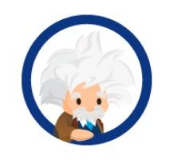
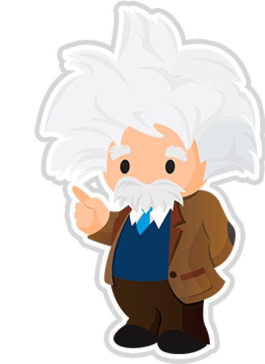
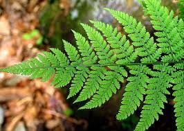
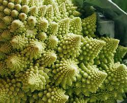

<template>
    <div class="header slds-align_absolute-center">
        <button class="slds-button header-logo"></button>
        <button class="slds-button header-button" onclick={callFractalParent}><h1 class="slds-align_absolute-center">Фрактал</h1></button>
        <button class="slds-button header-button" onclick={callColorParent}><h1 class="slds-align_absolute-center">Колір</h1></button>
        <button class="slds-button header-button" onclick={callMoveParent}><h1 class="slds-align_absolute-center">Рух</h1></button>
        <span class="test">
            <button class="slds-button tip-btn" onclick={openModal}></button>
            <!--Use template if:true to display/hide popup based on isModalOpen value-->
            <template if:true={isModalOpen}>
                <!-- Modal/Popup Box LWC starts here -->
                <section role="dialog" tabindex="-1" aria-labelledby="modal-heading-01" aria-modal="true" aria-describedby="modal-content-id-1" class="slds-modal slds-fade-in-open">
                    <div class="slds-modal__container">
                        <!-- Modal/Popup Box LWC header here -->
                        <header class="slds-modal__header info-header">
                            <span>
                                <h2 id="modal-heading-01" class="slds-text-heading_medium slds-hyphenate info-header">Підказка щодо фракталів</h2>
                                
                            </span>
                        </header>
                        <!-- Modal/Popup Box LWC body starts here -->
                        <div class="slds-modal__content slds-p-around_medium" id="modal-content-id-1">
                            <p><b>Фрактал</b> - це геометричний об'єкт, який можна розділити на частини, кожна схожа на вихідний об'єкт. Фрактали мають нескінченну кількість деталей і часто самоподібні та масштабовані. у багатьох випадках фрактали вони можуть бути створені за допомогою повторюваних шаблонів, рекурсивних або ітераційних процесів.</p>
                            <br>
                            <p>Основними властивостями, які характеризують фрактали, є самоподібність та нескінченна складність. <b>Самоподібність</b> — це коли частина фігури або контуру можна розглядати як копію цілого в меншому масштабі. В свою чергу <b>нескінченна складність</b> стосується того факту, що процес формування графіка є рекурсивним. Це означає, що коли процедура виконується, сама раніше виконана процедура виявляється підпроцедурою в її процедурі.</p>
                            <br>
                            <p><b>Приклади фракталів у природі:</b></p>
                            
                            
                            <br>
                            <p><a href="https://www.meteorologiaenred.com/uk/fractales.html" target="_blank">Якщо хочеш ще більше дізнатись про фрактали, натисни на мене!</a></p>
                        </div>
                        <!-- Modal/Popup Box LWC footer starts here -->
                        <footer class="slds-modal__footer">
                            <button class="slds-button slds-button_brand" onclick={submitDetails} title="OK">Зрозуміло!</button>
                        </footer>
                    </div>
                </section>
                <div class="slds-backdrop slds-backdrop_open"></div>
            </template>
        </span>
    </div>
</template>